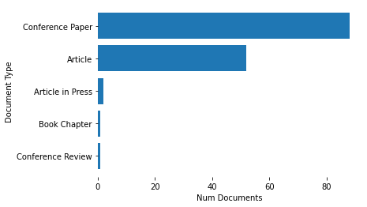
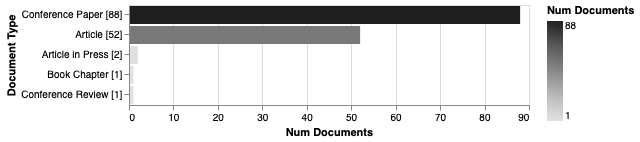
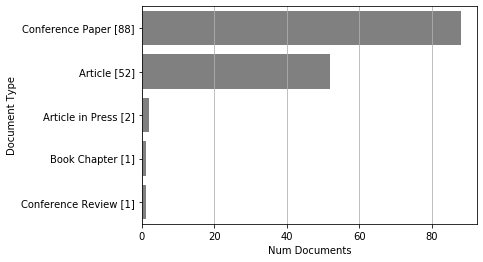
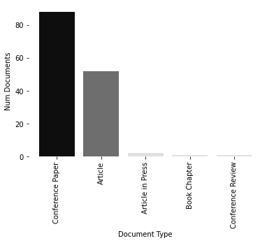
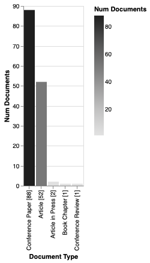
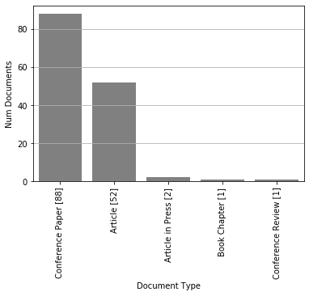
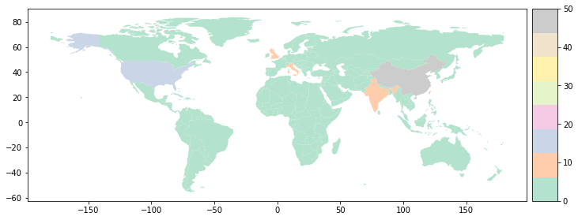

Documents by terms¶
[13]:
import matplotlib.pyplot as plt
import pandas as pd
df = pd.read_json("data-05.json", orient="records", lines=True)
[15]:
from techminer import DataFrame, Plot
df = DataFrame(df)
Document Type¶
[16]:
df.documents_by_term("Document Type")
[16]:
| Document Type | Num Documents | ID | |
|---|---|---|---|
| 0 | Conference Paper | 88 | [7, 8, 9, 12, 13, 14, 15, 16, 17, 19, 20, 21, ... |
| 1 | Article | 52 | [0, 1, 2, 3, 4, 5, 6, 10, 11, 18, 25, 27, 28, ... |
| 2 | Article in Press | 2 | [92, 95] |
| 3 | Book Chapter | 1 | [136] |
| 4 | Conference Review | 1 | [141] |
[7]:
# df.documents_by_term("Document Type").print_IDs()
[11]:
Plot(df.documents_by_term("Document Type")).barh()
[11]:
<matplotlib.axes._subplots.AxesSubplot at 0x7f8fd76aada0>

[16]:
# rdf.documents_by_terms("Document Type").altair_barhplot()
[16]:

[6]:
# rdf.documents_by_terms("Document Type").seaborn_barhplot()

[17]:
Plot(df.documents_by_term("Document Type")).bar()
plt.show()

[8]:
# df.documents_by_terms("Document Type").altair_barplot()
[8]:

[9]:
# df.documents_by_terms("Document Type").seaborn_barplot()

Source title¶
[18]:
df.documents_by_term("Source title"), minmax=(2, 100))
---------------------------------------------------------------------------
TypeError Traceback (most recent call last)
<ipython-input-18-1911b0ca6a28> in <module>
----> 1 df.documents_by_term("Source title", minmax=(2, 100))
TypeError: documents_by_term() got an unexpected keyword argument 'minmax'
Keywords¶
[21]:
df.documents_by_term("keywords_cleaned", sep=";").head(30)
[21]:
| keywords_cleaned | Num Documents | ID | |
|---|---|---|---|
| 0 | forecasting | 108 | [3, 4, 5, 6, 7, 8, 9, 11, 12, 13, 14, 15, 16, ... |
| 1 | time series | 91 | [3, 6, 7, 8, 9, 11, 12, 14, 15, 17, 18, 19, 22... |
| 2 | deep learning | 76 | [3, 4, 5, 7, 13, 14, 15, 19, 22, 23, 25, 26, 2... |
| 3 | Financial markets | 68 | [3, 4, 6, 7, 9, 11, 12, 16, 18, 20, 22, 26, 28... |
| 4 | trading | 65 | [3, 4, 6, 9, 11, 12, 16, 18, 19, 20, 26, 28, 3... |
| 5 | artificial neural networks | 62 | [4, 6, 9, 10, 12, 14, 16, 17, 18, 19, 25, 26, ... |
| 6 | commerce | 61 | [3, 4, 6, 7, 9, 19, 20, 22, 23, 26, 28, 34, 35... |
| 7 | long short-term memory neural network | 54 | [0, 1, 4, 6, 7, 12, 21, 24, 26, 30, 31, 34, 35... |
| 8 | recurrent neural networks | 52 | [2, 6, 8, 9, 11, 12, 16, 17, 20, 26, 28, 30, 3... |
| 9 | time series forecasting | 43 | [0, 1, 4, 6, 8, 11, 12, 14, 16, 20, 29, 31, 33... |
| 10 | financial time series | 38 | [6, 7, 13, 14, 18, 19, 26, 28, 46, 47, 50, 54,... |
| 11 | finance | 35 | [5, 9, 14, 19, 20, 33, 34, 37, 43, 46, 55, 59,... |
| 12 | machine learning | 35 | [0, 6, 10, 15, 19, 22, 24, 25, 27, 34, 36, 38,... |
| 13 | stock forecasting | 34 | [3, 4, 11, 12, 18, 20, 22, 26, 30, 38, 42, 43,... |
| 14 | financial data | 31 | [1, 2, 5, 7, 9, 14, 17, 19, 28, 37, 39, 46, 47... |
| 15 | convolutional neural network | 29 | [13, 14, 18, 19, 26, 29, 36, 45, 50, 64, 72, 7... |
| 16 | feedforward neural networks | 24 | [2, 26, 29, 37, 38, 39, 46, 47, 53, 62, 63, 67... |
| 17 | forecasting accuracy | 22 | [4, 5, 20, 36, 49, 60, 61, 65, 77, 81, 86, 93,... |
| 18 | convolution | 21 | [14, 18, 19, 26, 45, 64, 66, 77, 78, 79, 91, 9... |
| 19 | costs | 21 | [1, 11, 28, 30, 34, 56, 63, 75, 76, 88, 89, 92... |
| 20 | Learning algorithms | 19 | [3, 6, 9, 19, 25, 26, 42, 48, 56, 72, 75, 76, ... |
| 21 | financial time series forecasting | 19 | [2, 3, 5, 12, 25, 26, 34, 37, 46, 51, 91, 93, ... |
| 22 | Learning systems | 18 | [6, 14, 19, 25, 34, 38, 41, 54, 65, 70, 72, 76... |
| 23 | investments | 18 | [7, 22, 23, 35, 38, 60, 61, 70, 81, 83, 89, 94... |
| 24 | forecasting models | 16 | [20, 38, 41, 53, 61, 62, 67, 77, 84, 86, 89, 9... |
| 25 | Brain | 15 | [6, 34, 41, 53, 56, 65, 75, 83, 95, 101, 103, ... |
| 26 | algorithms | 14 | [2, 8, 9, 43, 45, 46, 47, 109, 111, 129, 138, ... |
| 27 | mean square error | 13 | [3, 7, 12, 35, 42, 50, 72, 113, 116, 128, 131,... |
| 28 | Big data | 12 | [3, 8, 19, 48, 58, 75, 85, 99, 100, 109, 118, ... |
| 29 | stock markets | 12 | [6, 27, 43, 48, 62, 70, 71, 73, 89, 91, 137, 140] |
Country¶
[22]:
from techminer.strings import *
df["Country"] = df["Affiliations"].map(lambda x: extract_country(x, sep=";"))
df.documents_by_term("Country", sep=";").head(15)
[22]:
| Country | Num Documents | ID | |
|---|---|---|---|
| 0 | China | 50 | [3, 4, 6, 7, 10, 13, 15, 27, 29, 33, 34, 37, 3... |
| 1 | United States | 14 | [3, 22, 23, 26, 30, 35, 69, 73, 84, 85, 104, 1... |
| 2 | United Kingdom | 12 | [5, 7, 11, 28, 35, 59, 87, 89, 108, 125, 139, ... |
| 3 | India | 11 | [9, 50, 51, 56, 57, 72, 90, 106, 112, 113, 130] |
| 4 | Taiwan | 10 | [14, 17, 19, 42, 60, 71, 92, 116, 137, 140] |
| 5 | Italy | 7 | [18, 24, 30, 103, 120, 127, 133] |
| 6 | Germany | 6 | [31, 39, 62, 70, 93, 136] |
| 7 | Singapore | 5 | [4, 6, 86, 109, 134] |
| 8 | Canada | 4 | [0, 20, 24, 133] |
| 9 | Colombia | 4 | [52, 94, 100, 121] |
| 10 | Greece | 4 | [8, 110, 114, 133] |
| 11 | Turkey | 4 | [12, 21, 67, 83] |
| 12 | Australia | 3 | [43, 64, 70] |
| 13 | Brazil | 3 | [61, 63, 129] |
| 14 | Denmark | 3 | [2, 8, 110] |
[28]:
plt.figure(figsize=(12,5))
Plot(df.documents_by_term("Country", sep=";")).worldmap();
